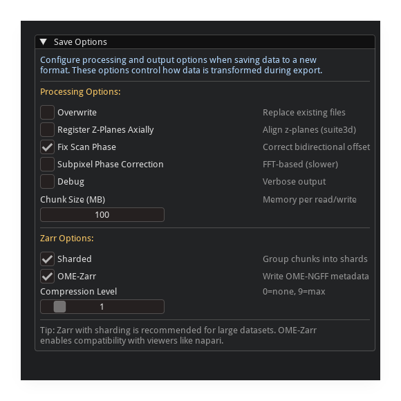
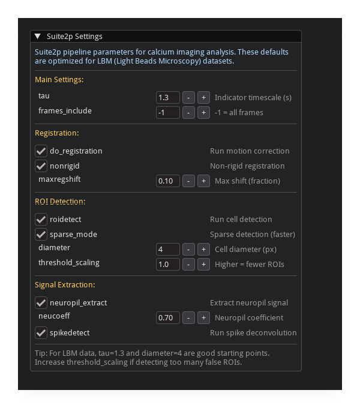

GUI User Guide#
Interactive data preview and processing tools for calcium imaging data.

Quick Start#
uv pip install mbo_utilities
mbo # opens file dialog
mbo /path/to/data # opens specific file
mbo /path --metadata # metadata only
From Python:
from mbo_utilities.gui import run_gui
run_gui("/path/to/data")
# or from a numpy array
import numpy as np
data = np.random.rand(100, 512, 512)
run_gui(data)
If no input is provided and Qt is available, a file dialog opens automatically.
Opening Data#

Open File vs Select Folder#
Open File(s) (
o): select one or more tiff filesSelect Folder (
Shift+O): load all supported files in a folder
Supported Formats#
Format |
Description |
|---|---|
|
raw ScanImage, BigTIFF, OME-TIFF, ImageJ hyperstacks |
|
zarr v3 arrays |
|
suite2p binary format |
|
HDF5 files |
|
numpy arrays (memory-mapped) |
Load Options#
Option |
Description |
|---|---|
Separate ScanImage mROIs |
split multi-ROI acquisitions into separate panels |
Enable Threading |
parallel z-stats computation on load |
Enable Data Preview Widget |
full preview with window functions and controls |
Metadata Preview Only |
show only metadata, skip image rendering |
Viewers#
The GUI selects a viewer automatically based on the data type.
Time-Series Viewer#
The default viewer for calcium imaging data (TZYX). Used for ScanImage TIFFs, standard TIFFs, ImageJ hyperstacks, and other volumetric data.
Features:
temporal projections (mean, max, std) over a sliding window
spatial filtering (gaussian blur, mean subtraction)
scan-phase correction for bidirectional raster scanning
frame averaging for piezo z-stacks
z-stats signal quality analysis
suite2p pipeline integration
Pollen Calibration Viewer#
Specialized viewer for LBM beamlet calibration data (stack_type == "pollen"). Automatically selected when pollen calibration data is loaded.
Features:
automatic bead detection via cross-correlation
manual interactive calibration (click-to-mark beads)
cavity A/B discrimination for dual-cavity LBM
result visualization with XY position and offset plots
previous calibration result loading from H5 files
Preview Controls#
Window Functions#
Apply temporal projections over a sliding window of frames.
Function |
Description |
|---|---|
mean |
average intensity over window |
max |
maximum intensity projection |
std |
standard deviation over window |
Parameters:
Window Size: number of frames to include (3-20 recommended)
Gaussian Sigma: spatial gaussian filter (0 = disabled)
Mean Subtraction: subtract per-z-plane mean image to highlight activity. requires z-stats to finish computing first.
Scan-Phase Correction#
Preview bidirectional raster-scan phase correction before saving. Only available for ScanImage data.
Parameter |
Description |
|---|---|
Fix Phase |
enable/disable correction |
Sub-Pixel |
FFT-based sub-pixel correction |
Upsample |
sub-pixel precision factor (1/N pixel) |
Exclude border-px |
exclude edge pixels from correlation |
max-offset |
limit allowed pixel offset |
Workflow:
view mean or mean-subtracted projection (window 3-15)
toggle Fix Phase on/off to compare
adjust border-px and max-offset if needed
toggle Sub-Pixel for further improvement
adjust Upsample factor (2-3 typical)
Frame Averaging#
Available for piezo z-stack data. When frames_per_slice > 1, toggle averaging based on ScanImage’s logAverageFactor. This changes the effective shape of the data.
Metadata Viewer#
Toggle with m or the Metadata button in the status bar.

Displays all metadata attached to the current array, including ScanImage headers, dimension tags, and user-supplied fields.
Z-Stats#
Per-z-plane signal quality statistics, computed in the background on load.
Metrics#
Metric |
Description |
|---|---|
Mean |
average fluorescence intensity |
Std |
standard deviation |
SNR |
signal-to-noise ratio (mean / std) |
Visualization#
The z-stats panel adapts to the data:
single z-plane: stats table with bar chart
2 z-planes: grouped bar charts (Z1 vs Z2)
many z-planes: line plots with error bars and z-plane signal profiles
multiple ROIs: combined per-ROI profiles with mean +/- std shading
Saving Data#
Open via File > Save As or press s.
{kind=link}
Output Formats#
Format |
Description |
|---|---|
|
BigTIFF with ImageJ/OME metadata |
|
zarr v3 (recommended for large data) |
|
suite2p binary format |
|
HDF5 |
Selection#
The save dialog provides dimension-specific subsetting:
Timepoints:
start:stop:stepsyntax with optional exclusion rangesZ-planes: range and step selection
Channels: multi-channel selection (when applicable)
Output suffix: custom suffix appended to filename
An output preview shows the filename, estimated size, and output shape before saving.
Options#
{kind=link}
Option |
Description |
|---|---|
Run in Background |
save without blocking the GUI |
Overwrite |
replace existing output files |
Fix Scan Phase |
apply phase correction on write |
Subpixel Correction |
FFT-based phase correction on write |
Register Z-Planes |
suite3d axial registration (requires suite3d) |
Chunk Size (MB) |
memory chunk size for writing |
Zarr-Specific Options#
Option |
Description |
|---|---|
Sharding |
enable zarr sharding for faster access |
OME-Zarr |
write OME-Zarr compliant metadata |
Compression Level |
zstd compression level (0 = none) |
Pyramid |
generate multi-resolution pyramid |
Pyramid Layers |
max number of downsampled levels |
Metadata#

The save dialog includes a metadata editor:
suggested fields are auto-populated from the array
fields can be auto-detected from the filename
custom key/value pairs can be added
missing recommended fields are highlighted
Process Manager#
Click the status indicator in the menu bar to open the process console.
The status indicator is color-coded:
green: idle or completed
orange: task running (with progress percentage)
red: error
The process console shows:
active tasks: in-app progress (save, z-stats, registration)
background processes: external processes with PID, elapsed time, and status
per-process log output (color-coded, collapsible)
kill / dismiss / copy controls
Suite2p Integration#
{kind=link}
Available when suite2p is installed. Access via the processing pipeline panel.
run suite2p on selected z-planes
all suite2p parameters exposed with descriptions
output directory selection
scan-phase correction options for processing
parallel processing controls
Spatial Crop#
click “Add Crop Selector”
drag the yellow rectangle on the image
only the cropped region is processed
External Tools#
The GUI can launch external tools when installed:
suite2p GUI with rastermap integration
cellpose GUI for cell segmentation
window polling detects when external tools close
Results and Diagnostics#
suite2p results viewer with trace quality stats
diagnostics viewer for signal quality analysis
grid search viewer for parameter exploration